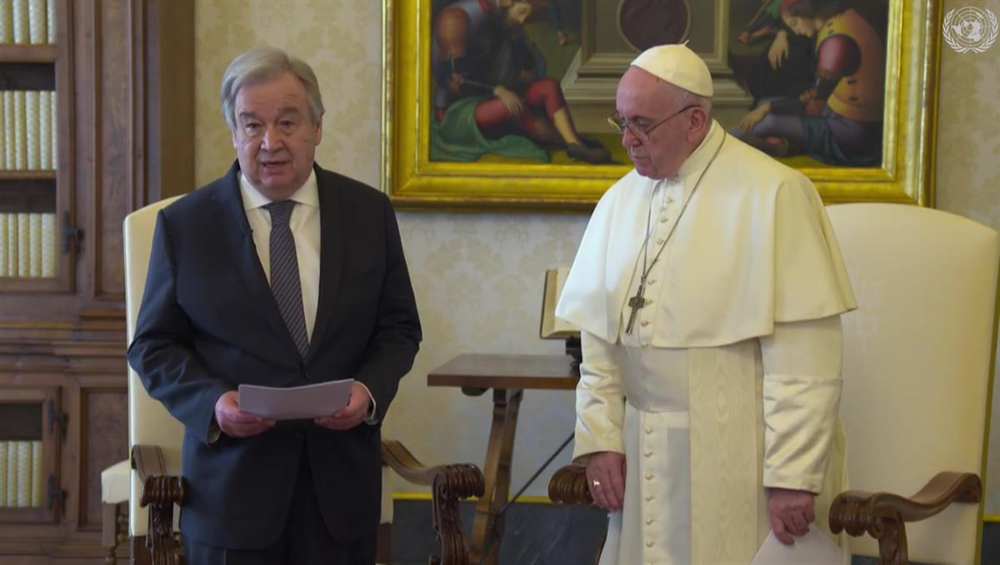
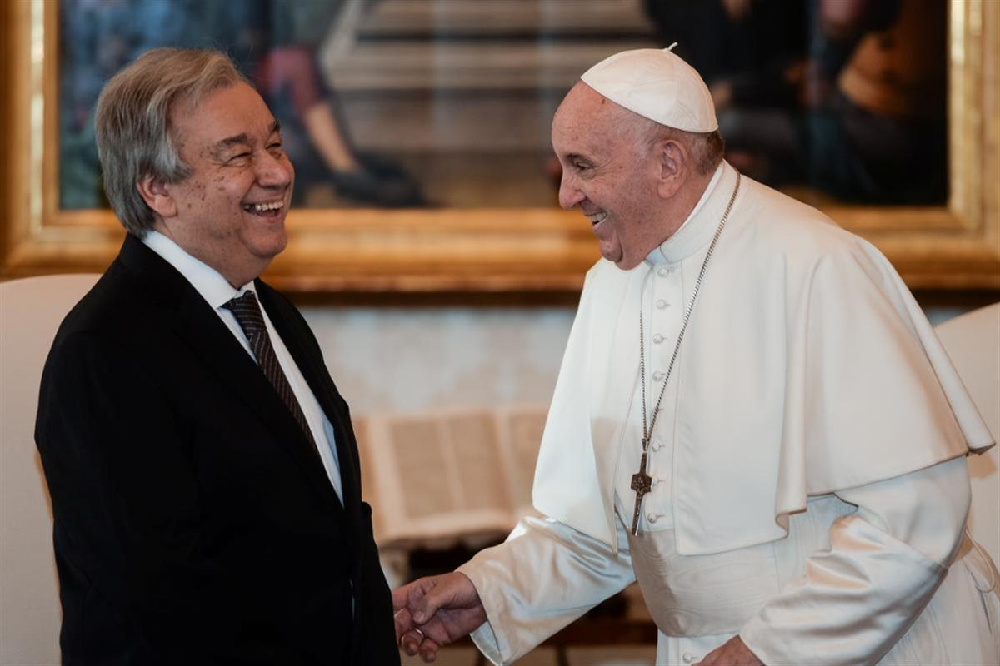

UN NEWS: Stand for peace and harmony says Guterres, following meeting with Pope Francis

20 December 2019
UNITED NATIONS: Peace and Security
In the midst of “turbulent and trying times”, all the world’s people must stand together in peace and harmony, the UN Secretary-General said on Friday. António Guterres was speaking following an audience with Pope Francis at the Vatican, who he thanked for his strong support for the global Organization.
The UN chief praised the head of the Roman Catholic Church for being “a messenger of humanity” who has spoken out on issues such as the refugee crisis, poverty, inequality and the climate emergency.
“These messages coincide with the core values of the United Nations Charter – namely to reaffirm the dignity and worth of the human person. To promote love of people and care for our planet. To uphold our common humanity and protect our common home. Our world needs that more than ever”, he said.
LINK TO THE VIDEO ON UN WEB TV
Climate action now
Mr. Guterres arrived in Rome from Madrid, which hosted the recent UN climate conference known as COP25, which ended with no overall consensus.
He called on countries to commit to the goal of achieving carbon neutrality by 2050, which scientists say is necessary for the planet to survive.
Pope Francis also underlined the need for urgent climate action.
Speaking in Spanish, he gave thanks for those who strive to create a more humane and just society and urged people everywhere to listen to the young people pushing for a better world.
“It is necessary to recognize oneself as members of a single humanity and to take care of our land which, generation after generation, has been entrusted to us by God in custody so that we may cultivate it and leave it in inheritance to our children. Commitment to reducing polluting emissions and comprehensive ecology is urgent and necessary: let's do something before it's too late,” he said.
The Pope also warned against indifference to the suffering of others.
“We cannot - we must not - look the other way at the injustices, the inequalities, the scandal of hunger in the world, of poverty, of children who die because they have no water, food, the necessary care. We can't look the other way at any kind of abuse against the little ones. We must fight this plague together,” he said.
Peace needed in turbulent times
The meeting between the two leaders fell just ahead of Christmas, which the Secretary-General described as a time of peace and goodwill.
However, he expressed sadness that some Christian communities are unable to celebrate the holiday in safety. At the same time, Jewish and Muslim communities are also being persecuted, while members of all three religions have been killed for their faith, including in houses of worship.
Mr. Guterres stressed that more must be done to promote mutual understanding and tackle rising hatred.
“In these turbulent and trying times, we must stand together for peace and harmony. And that is the spirit of this season”, he stated.
Pope Francis called for people everywhere to have greater faith in the international community.
“Trust in dialogue between people and between nations, in multilateralism, in the role of international organizations, in diplomacy as an instrument for understanding and understanding, is indispensable to build a peaceful world,” he said.
SOURCE: UNITED NATIONS
FURTHER READING: VATICAN NEWS
REUTERS: POPE AND U.N. CHIEF APPEAL FOR ENVIRONMENT, RELIGIOUS TOLERANCE

Pope Francis meets with Secretary-General of the United Nations, Portugal's Antonio Guterres, for a private audience at the Vatican, December 20, 2019. Filippo Monteforte/Pool via REUTERS